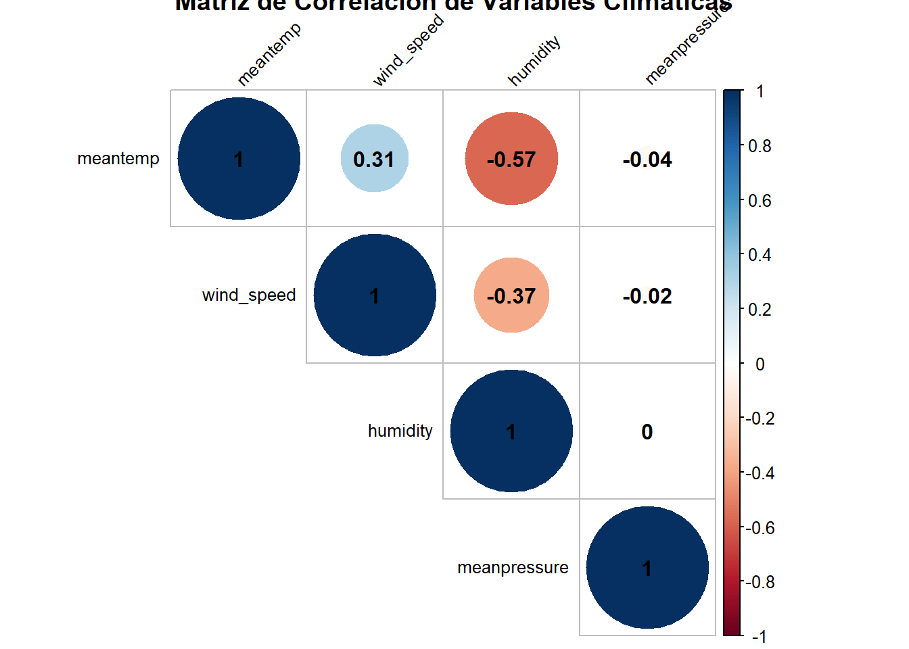
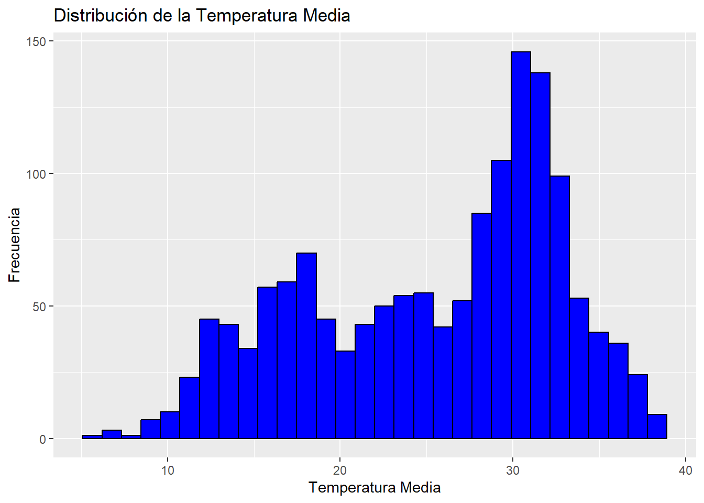
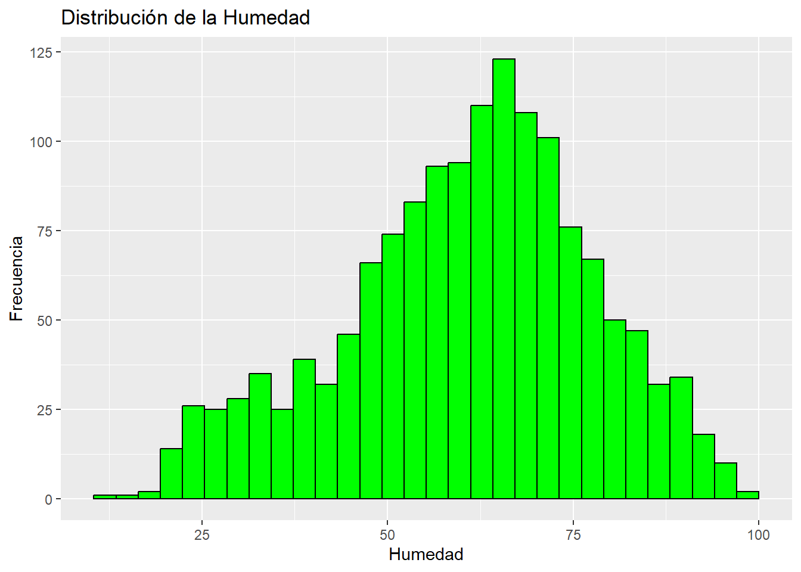
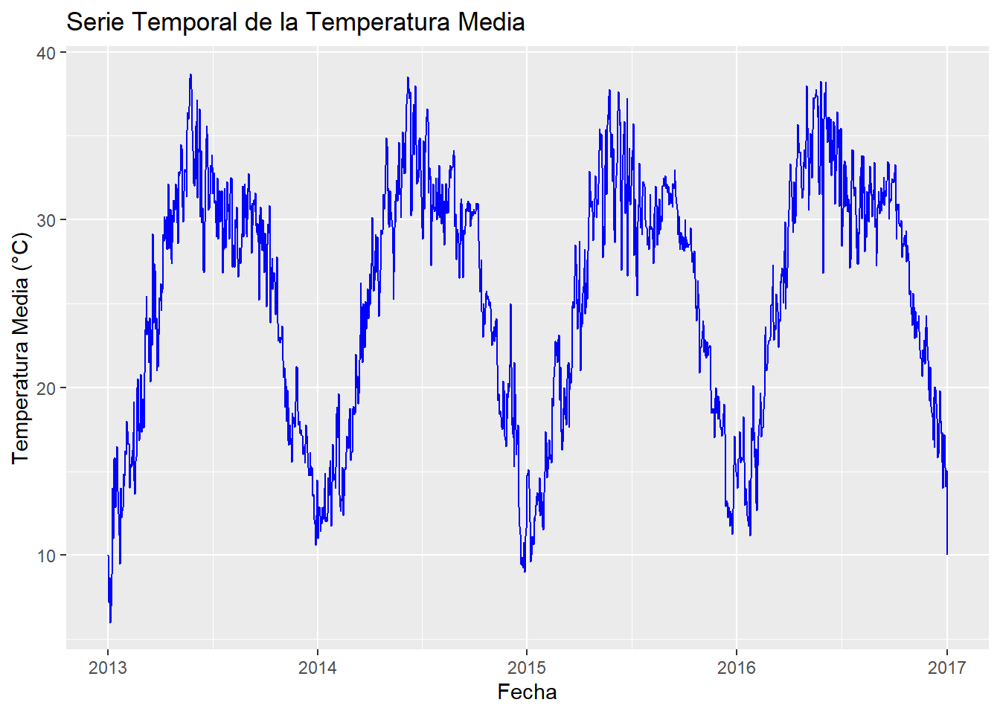
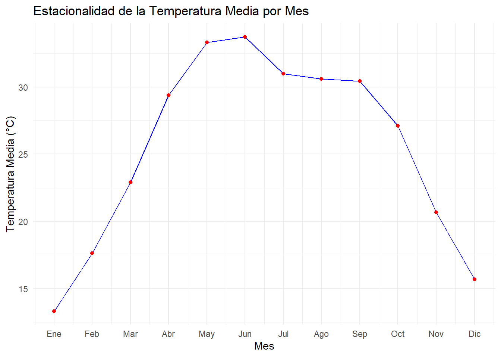
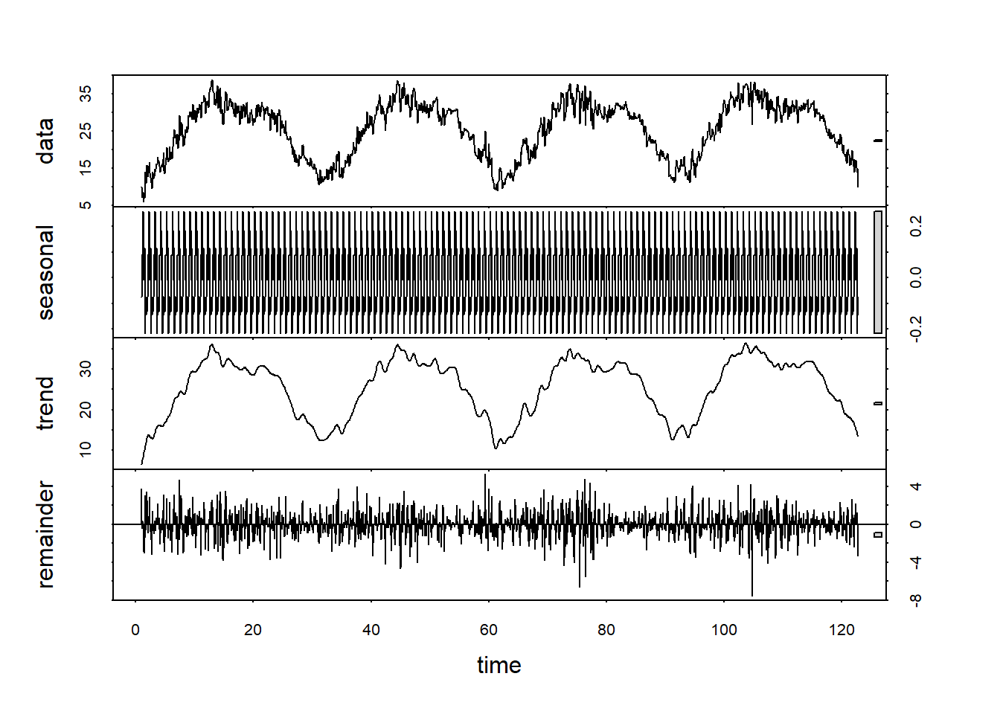

Chapter 2 Modulo 1 - Unidad 1
2.1 Dataset
ruta <- "C:/Users/Diego Ortiz/OneDrive/Documentos/Series de tiempo/Series1/ST1/DailyDelhiClimateTrain.csv"
data <- read.csv(ruta)Validamos el cargue inicial de nuestro Dataset
## date meantemp humidity wind_speed meanpressure
## 1 2013-01-01 10.000000 84.50000 0.000000 1015.667
## 2 2013-01-02 7.400000 92.00000 2.980000 1017.800
## 3 2013-01-03 7.166667 87.00000 4.633333 1018.667
## 4 2013-01-04 8.666667 71.33333 1.233333 1017.167
## 5 2013-01-05 6.000000 86.83333 3.700000 1016.500
## 6 2013-01-06 7.000000 82.80000 1.480000 1018.0002.2 Resumen Estadístico de las Variables
## date meantemp humidity wind_speed
## Length:1462 Min. : 6.00 Min. : 13.43 Min. : 0.000
## Class :character 1st Qu.:18.86 1st Qu.: 50.38 1st Qu.: 3.475
## Mode :character Median :27.71 Median : 62.62 Median : 6.222
## Mean :25.50 Mean : 60.77 Mean : 6.802
## 3rd Qu.:31.31 3rd Qu.: 72.22 3rd Qu.: 9.238
## Max. :38.71 Max. :100.00 Max. :42.220
## meanpressure
## Min. : -3.042
## 1st Qu.:1001.580
## Median :1008.563
## Mean :1011.105
## 3rd Qu.:1014.945
## Max. :7679.333- 1. Temperatura Media (meantemp)
Rango: De 6°C a 38.71°C, mostrando una gran variabilidad anual que es típica de zonas con cambios estacionales marcados.
Cuartiles:
1er Cuartil (Q1): 18.86°C, indicando que el 25% de los días tienen una temperatura igual o menor a este valor.
Mediana: 27.71°C, lo que significa que la mitad de los días son más fríos y la otra mitad más calurosos que este valor.
3er Cuartil (Q3): 31.31°C, el 75% de los días tienen temperaturas que no superan este valor.
Media: 25.50°C, cercana a la mediana, lo que sugiere una distribución relativamente simétrica de las temperaturas alrededor de este valor central.
- 2. Humedad
Rango: De 13.43% a 100%, indicando días con muy baja humedad hasta saturación completa.
Cuartiles:
1er Cuartil (Q1): 50.38%, el 25% de los días tienen una humedad igual o menor a este valor.
Mediana: 62.62%, más de la mitad de los días tienen una humedad superior a este porcentaje.
Q3: 72.22%, tres cuartos de los días presentan una humedad que no excede este valor.
Media: 60.77%, también cercana a la mediana, sugiriendo una distribución equilibrada de la humedad.
- 3. Velocidad del Viento
Rango: De 0 km/h a 42.22 km/h, mostrando días sin viento hasta días con vientos fuertes.
Cuartiles:
Q1: 3.475 km/h, un cuarto de los días tienen una velocidad de viento igual o menor a este valor.
Mediana: 6.222 km/h, indicando que la mitad de los días tienen velocidades de viento menores a este valor.
Q3: 9.238 km/h, el 75% de los días tienen velocidades de viento que no superan este valor.
Media: 6.802 km/h, ligeramente superior a la mediana, sugiriendo un leve sesgo hacia días con más viento.
- 4. Presión Media
Rango: De -3.042 hPa a 7679.333 hPa.
Cuartiles:
Q1: 1001.580 hPa, indicando condiciones normales de presión atmosférica.
Mediana: 1008.563 hPa, valor medio típico de la presión atmosférica.
Q3: 1014.945 hPa, dentro de lo esperado para la presión normal.
Media: 1011.105 hPa, cercana a la mediana.
Verificamos si hay valores NA
## [1] 0No tenemos valores nulos en nuestro Dataset
2.3 Correlación
## Loading required package: corrplot## Warning: package 'corrplot' was built under R version 4.2.3## corrplot 0.92 loaded# Calcular la matriz de correlación
correlation_matrix <- cor(data[, c("meantemp", "humidity", "wind_speed", "meanpressure")], use = "complete.obs")
# Gráfico de la matriz de correlación
corrplot(correlation_matrix, method = "circle", type = "upper", order = "hclust",
tl.col = "black", tl.srt = 45, addCoef.col = "black",
title = "Matriz de Correlación de Variables Climáticas", cl.cex = 0.8, tl.cex = 0.8)
- Temperatura Media (meantemp) y Velocidad del Viento (wind_speed):
Correlación= 0.31: Hay una correlación positiva moderada entre la temperatura media y la velocidad del viento. Esto sugiere que, en general, días más cálidos tienden a estar asociados con vientos más fuertes. Esto podría deberse a que el calor puede intensificar los movimientos del aire debido a diferencias en la presión atmosférica.
- Temperatura Media (meantemp) y Humedad (humidity):
Correlación= -0.057: La correlación es muy débil y negativa, indicando que no hay una relación lineal significativa entre la temperatura y la humedad. Los días más cálidos no muestran una tendencia clara de ser más o menos húmedos.
- Temperatura Media (meantemp) y Presión Media (meanpressure):
Correlación= -0.03: Similar al caso anterior, hay una correlación negativa muy débil, casi inexistente, entre la temperatura media y la presión media. Esto indica que las variaciones en la temperatura tienen poco o ningún efecto lineal sobre la presión atmosférica en este conjunto de datos.
- Velocidad del Viento (wind_speed) y Humedad (humidity):
Correlación= -0.37: Existe una correlación negativa moderada entre la velocidad del viento y la humedad. Esto puede sugerir que días con vientos más fuertes tienden a tener menor humedad, posiblemente porque el viento dispersa la humedad del aire.
- Velocidad del Viento (wind_speed) y Presión Media (meanpressure):
Correlación= -0.02: Hay una correlación negativa muy baja entre la velocidad del viento y la presión media, lo que sugiere que no hay una relación lineal clara entre estas dos variables.
- Humedad (humidity) y Presión Media (meanpressure):
Correlación= 0: No existe correlación entre la humedad y la presión media, indicando que los cambios en una no están linealmente relacionados con cambios en la otra en este conjunto de datos.
2.4 Análisis exploratorio de datos
Distribuciones individuales
Temperatura Media
# Histograma de la temperatura media
ggplot(data, aes(x = meantemp)) +
geom_histogram(bins = 30, fill = "blue", color = "black") +
labs(title = "Distribución de la Temperatura Media", x = "Temperatura Media", y = "Frecuencia") El histograma de la temperatura media muestra una distribución bimodal, con dos picos claramente definidos. Esto sugiere patrones estacionales, con temperaturas más bajas en los meses de invierno y más altas en los meses de verano. La distribución relativamente amplia indica variabilidad en las temperaturas diarias a lo largo del año.
Humedad
# Histograma de la humedad
ggplot(data, aes(x = humidity)) +
geom_histogram(bins = 30, fill = "green", color = "black") +
labs(title = "Distribución de la Humedad", x = "Humedad", y = "Frecuencia") La distribución de la humedad parece ser ligeramente sesgada hacia la derecha, con un rango que cubre desde muy baja hasta saturación (100%). La mayoría de los valores se concentra alrededor del 50-80%, indicando una humedad generalmente alta en esta área.
Velocidad del viento
# Histograma de la velocidad del viento
ggplot(data, aes(x = wind_speed)) +
geom_histogram(bins = 30, fill = "red", color = "black") +
labs(title = "Distribución de la Velocidad del Viento", x = "Velocidad del Viento", y = "Frecuencia") El histograma para la velocidad del viento muestra una distribución sesgada hacia la derecha, con la mayoría de los días teniendo velocidades bajas a moderadas y unos pocos días con velocidades extremadamente altas. Esto es típico en áreas donde los días de viento extremo son menos frecuentes pero pueden alcanzar velocidades significativas.
El histograma para la velocidad del viento muestra una distribución sesgada hacia la derecha, con la mayoría de los días teniendo velocidades bajas a moderadas y unos pocos días con velocidades extremadamente altas. Esto es típico en áreas donde los días de viento extremo son menos frecuentes pero pueden alcanzar velocidades significativas.
2.5 Descomposición de Series Temporales
# Asegurándose de que la columna de fecha es de tipo Date
data$date <- as.Date(data$date)
# Cargar ggplot2
library(ggplot2)
Temperatura Media
ggplot(data, aes(x = date, y = meantemp)) +
geom_line(group=1, colour="blue") +
labs(title="Serie Temporal de la Temperatura Media", x="Fecha", y="Temperatura Media (°C)") El gráfico de la serie temporal de la temperatura media muestra una clara estacionalidad con temperaturas que oscilan regularmente cada año, sin una tendencia general evidente de aumento o disminución a lo largo del tiempo. Las variaciones estacionales son prominentes, con picos durante los meses de verano y valles en los meses de invierno, reflejando la típica fluctuación climática de la región. La variabilidad interanual en la amplitud de estas oscilaciones sugiere diferencias en la intensidad de las estaciones que podrían estar influenciadas por factores climáticos adicionales. No se observan tendencias a largo plazo en el aumento o disminución de las temperaturas medias anuales, lo que indica una relativa estabilidad en el clima durante el período observado.
Humeda
ggplot(data, aes(x = date, y = humidity)) +
geom_line(group=1, colour="green") +
labs(title="Serie Temporal de la Humedad", x="Fecha", y="Humedad (%)")
El gráfico de la serie temporal de la humedad muestra una estacionalidad marcada, con oscilaciones claras y repetidas que indican variaciones significativas entre períodos húmedos y secos a lo largo del año. Las diferencias anuales en la altura de los picos sugieren variabilidad en la intensidad de las estaciones lluviosas, probablemente relacionadas con cambios en los patrones climáticos locales. Los períodos de alta humedad, que a menudo alcanzan el 100%, podrían corresponder a las temporadas de monzones, mientras que los valles representan los tiempos más secos, destacando la influencia de los ciclos estacionales en el clima de la región.
Velocidad del Viento
ggplot(data, aes(x = date, y = wind_speed)) +
geom_line(group=1, colour="red") +
labs(title="Serie Temporal de la Velocidad del Viento", x="Fecha", y="Velocidad del Viento (km/h)") El gráfico muestra la velocidad del viento a lo largo de varios años, destacando variaciones diarias significativas sin una tendencia clara de aumento o disminución a largo plazo. La velocidad del viento presenta una estacionalidad menos marcada comparada con la temperatura y la humedad, aunque se observan picos ocasionales que podrían corresponder a eventos meteorológicos específicos como tormentas o frentes de alta velocidad. Estos picos son notables y esporádicos, con la mayoría de los valores concentrados en rangos más bajos, indicando que días con vientos extremadamente fuertes son menos frecuentes. La serie muestra una variabilidad considerable día a día, lo cual es típico en los registros de velocidad del viento debido a su naturaleza altamente dinámica y susceptible a cambios rápidos debido a las condiciones locales y regionales.